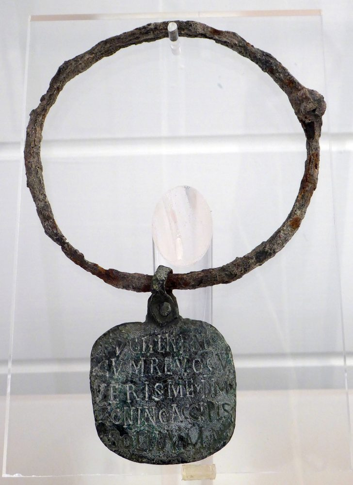

Unit 6 · Slavery in ancient Rome · Lesson 9
Treatment: food, punishment, chains and sale
What did owners set for the people they enslaved to eat, wear and suffer, what limited them, and how far can we trust the sources that tell us?
Year 11 Ancient History · Present with → or space · Read on a phone with R
Review · books closed · 6 minutes · press K for the timer
Five questions on owners’ words, and one thesis to make arguable
- What rewards does Columella say he gave to mothers (1.8.19), and whose claim is it? ‘exemption from work’ for ‘a mother of three sons’, and ‘her freedom as well’ for ‘a mother of more’. It is Columella’s own claim of what he granted (‘I have granted’), not a record from any farm.
- Whose scheme is Varro 1.17.1, and what does it class together? A speaker in the dialogue (Scrofa) reports what ‘others’ do: three classes of instruments, the articulate (enslaved people), the inarticulate (cattle) and the mute (vehicles). It is not shown to be Varro’s own view.
- What does Seneca mean by ‘we make them enemies’ (Epistle 47.5)? He answers a saying, ‘As many enemies as you have slaves’: the people are not enemies when owners acquire them; owners make them enemies, by the way they treat them. He is arguing to owners.
- What does Pliny mean by ‘a kind of will’ (Letters 8.16)? Pliny, an owner writing to a friend after a sickness in his household, says he has allowed the people he enslaves ‘to make a kind of will’ and observes it ‘as if it were good in law’: so it is Pliny’s own practice, not a legal right.
- What did ‘ancient custom’ require after Pedanius Secundus was murdered (Tacitus, Annals 14.42), and what happened when the Senate voted for it? That ‘the whole slave-establishment’ under his roof be put to death. The Senate’s majority voted for it, but a crowd with ‘stones and firebrands’ stopped the sentence being obeyed, and the emperor lined the route with soldiers (14.45). The figure ‘four hundred’ is in a speech Tacitus composed for a senator: it may be accurate, or chosen for effect.
- Writing · make this thesis arguable: “Enslaved people worked on farms and in towns.” Two tests (Lesson 5): could someone disagree? does it name its reasons? For example: Although the sources show farms and mines most clearly, enslaved people probably did a wider range of skilled work in towns and households, largely because owners trained them in crafts and service to raise their value.
Mark your own answers in a different colour. Which question did you find hardest?
Learning intentions and success criteria · 2 minutes
Today’s goals
- evaluate the evidence for the treatment of enslaved people
- write an Evaluate move that judges a source against named criteria
- describe food, punishment and sale, with evidence
- explain why treatment varied and what limited it
- evaluate a source for a question: ‘reliable for…, but not for…’, judged by named criteria
Syllabus outcomes: AH-11-03 explains the role and significance of forces, features, events, individuals and groups in shaping the past · AH-11-04 accounts for the different perspectives of individuals and groups in their historical context · AH-11-05 analyses different types of sources for evidence to support a historical account or argument · AH-11-07 communicates historical understanding, applying historical knowledge, terms and concepts. Life Skills: AH-LS-04 recognises causes and effects of events or developments · AH-LS-11 communicates information about the past using historical terms and concepts.
Note-making · the routine for the whole course
How to structure your notes
questions and key terms, written after
short phrases, arrows (→ leads to), abbreviations (c. = about; ↔ = compared with)
- 1A new pageA cue column about a quarter of the page wide; title and date at the top; room for a summary at the bottom.
- 2Listen and look, then writePhrases, not sentences. Today: for every source, who wrote it, for whom, when, and what it says.
- 3Write your own notes at the ✎ checkpointThen compare with the model notes, one row at a time. Add what you missed in a second colour.
- 4Write the cue questions afterwardsUse exam verbs: describe, explain, evaluate. To revise, cover your notes and answer the cues.
- 5Finish with a three-sentence summaryOne checkpoint today: food, punishment, sale and the limits on owners.
Key vocabulary · add to the unit word wall
Words you will use today
| Verb and criteria | Meaning · what the answer does |
|---|---|
| Evaluate (NESA) | ‘Make a judgement based on criteria. Determine the value of.’ — Department advice: name the criteria and judge against them. |
| Criteria | The standards a judgement uses: author’s position, purpose, date, typicality. |
| Owner / master | The person who legally owned an enslaved person; the syllabus says ‘masters’. |
| Stoic | A follower of a Greek philosophy that stressed virtue and shared humanity, as Seneca did. |
| Content terms | Meaning |
|---|---|
| Ergastulum | A prison or workhouse for enslaved people kept in chains on a farm (Columella 1.6.3, 1.8.16). |
| Ration | The fixed amount of food an owner issued to the people he enslaved. |
| Edict | A magistrate’s public notice of the rules he would enforce. The aediles, who supervised markets, issued one on sales. |
| Sale ticket | The written notice that went with each person offered for sale (Rolfe’s translation of Gellius 4.2.1). |
1 · A later object · We do — See – Think – Wonder · 5 minutes · no label yet · press K for the timer
Look closely before you read anything about it

Images: Mark Landon (CC BY 4.0). Full details on the last slide.
What is in the photograph? Describe only what anyone could check: shapes, materials, colours, marks. No guesses yet.
What do you think it is, and what in the photograph makes you think so? Mark each idea sure, probably or maybe, and say what would confirm it.
What would you need to know before you could say more?
Say it to a partner first, then write it on your See – Think – Wonder sheet. Test your See column: could someone who cannot see the photograph draw it from your words?
1 · A later object · We do — the reveal · 4 minutes
An iron collar with a bronze tag: 4th century CE or later
Fugi tene me cum revoc‹a›veris me d(omino) m(eo) Zonino accipis solidum
In plain English (written for this lesson): I have run away. Hold me. When you bring me back to my master Zoninus, you receive a solidus, a gold coin.
The Zoninus collar, Museo Nazionale Romano (Baths of Diocletian), Rome, inv. 65043 · CIL XV 7194 · 4th century CE or later · Latin as in the Wikimedia Commons record, with its line divisions left out · no findspot is recorded (Wikipedia, citing J. Trimble, 2016).
What can a 4th-century object tell us about our period, about 200 BCE to 200 CE, and what can it not?
It can show that owners were still restraining people who ran away, and trying to get them back, a century or more after our period ends. It cannot show what restraints, if any, were used between about 200 BCE and 200 CE, or how common any were, from one object; or what the wearer thought, because the words in the wearer’s voice are most probably the owner’s.
New term · slave collar (a fixed museum term): a metal neck ring with an inscribed tag naming an owner; historians usually read such collars as punishments for people who had run away.
2 · The evidence cards · I do — the criteria card · 1 minute
Four criteria for judging a source
- 1PositionWho wrote it, and where did they stand? An owner, a philosopher, an emperor’s biographer, a jurist?
- 2PurposeWhy did they write it? To instruct, to persuade, to record, to rule?
- 3DateWhen was it written, and how far from the events or the period? Is it inside about 200 BCE to 200 CE?
- 4TypicalityIs it one case, or the usual? What does it leave out?
‘Make a judgement based on criteria. Determine the value of.’
The frame: “Judged by [criterion], [source] is reliable for …, but not for …, because …”
A source is reliable or not reliable for a question. This is the Reliability step of OVPRL (the OVPRL routine on page 2 of your booklet), made exact by naming the criterion you judge it by.
2 · The evidence cards · I do — think aloud · card 1 · an owner’s rules · 1½ minutes
Food and clothing: what Cato sets for the hands
Rations for the hands: Four modii of wheat in winter, and in summer four and a half for the field hands. The overseer, the housekeeper, the foreman, and the shepherd should receive three. The chain-gang should have a ration of four pounds of bread through the winter, increasing to five when they begin to work the vines, and dropping back to four when the figs ripen.
Clothing allowance for the hands: A tunic 3½ feet long and a blanket every other year. When you issue the tunic or the blanket, first take up the old one and have patchwork made of it.
… When the slaves were sick, such large rations should not have been issued.
Cato, De Agri Cultura 56.1, 59.1 and 2.4, about 160 BCE, a handbook for farm owners (Cato, 234–149 BCE, was a Roman senator) · trans. W. D. Hooper and H. B. Ash (Loeb, 1934). A modius is a Roman measure of grain.
- 1Who wrote it, and for whomA Roman senator, advising a farm owner (chapter 2 is about the owner’s visit to the farm).
- 2FoodWheat by the season, by job: more for the field hands, three modii for the overseer, housekeeper, foreman and shepherd. Bread for the chain-gang, rising when the vine work starts.
- 3ClothingA tunic 3½ feet long, and a blanket ‘every other year’ (Hooper and Ash; in Cato’s Latin this goes with the blanket); an old one is taken back and patched.
- 4The sickCato lists, among the owner’s reminders to the overseer, that rations should not have been so large when the hands were sick (2.4).
Which group gets bread, not wheat, and what happens to its ration in the vine season?
The chain-gang: ‘a ration of four pounds of bread through the winter, increasing to five when they begin to work the vines’, and back to four when the figs ripen. The text names no unit of time for the bread, so say ‘a ration’, not ‘a day’.
2 · The evidence cards · I do — think aloud · card 2 · an owner’s ideal · 1½ minutes
Chains and an underground prison: what Columella plans
It will be best that cubicles for unfettered slaves be built to admit the midday sun at the equinox; for those who are in chains there should be an underground prison, as wholesome as possible, receiving light through a number of narrow windows built so high from the ground that they cannot be reached with the hand.
Columella, De Re Rustica 1.6.3 · trans. H. B. Ash (Loeb, 1941)
Again, it is the established custom of all men of caution to inspect the inmates of the workhouse, to find out whether they are carefully chained, whether the places of confinement are quite safe and properly guarded, whether the overseer has put anyone in fetters or removed his shackles without the master’s knowledge.
Columella, De Re Rustica 1.8.16 · trans. H. B. Ash (Loeb, 1941)
- 1Who wrote it, and for whomColumella, writing a farming handbook for owners in the middle of the 1st century CE.
- 2The plan (1.6.3)Rooms for those not in chains, and an underground prison, with narrow high windows, for those who are.
- 3The inspection (1.8.16)A careful owner checks the chains, the places of confinement, and what the overseer has done with fetters.
What does the owner need to know about the overseer and the fetters (1.8.16)?
‘whether the overseer has put anyone in fetters or removed his shackles without the master’s knowledge’. The owner is to find out whether his overseer has chained or unchained anyone without his knowledge.
2 · The evidence cards · I do — think aloud · card 3 · a moralist’s criticism, and a rule on sale · 1 minute
Silence at dinner, and the sale ticket
All this time the poor slaves may not move their lips, even to speak. The slightest murmur is repressed by the rod; even a chance sound,—a cough, a sneeze, or a hiccup,—is visited with the lash. There is a grievous penalty for the slightest breach of silence. All night long they must stand about, hungry and dumb.
Seneca, Letters to Lucilius (Epistle) 47.3, about 62–65 CE, a Stoic philosopher writing to his friend Lucilius · trans. R. M. Gummere (Loeb, 1917)
See to it that the sale ticket of each slave be so written that it can be known exactly what disease or defect each one has, which one is a runaway or a vagabond, or is still under condemnation for some offence.
The edict of the curule aediles, the magistrates who supervised markets, as quoted in Aulus Gellius, Attic Nights 4.2.1, later 2nd century CE · trans. J. C. Rolfe (Loeb, 1927)
- 1SenecaA moralist and an owner, describing a householder’s dinner: the people who serve are not to make a sound, and a murmur, a cough or a sneeze is punished.
- 2The edictNot Gellius’s own rule: a magistrates’ notice that Gellius quotes, about what must be written for a buyer.
What three things did the edict require a sale ticket to state?
‘what disease or defect each one has’; ‘which one is a runaway or a vagabond’; and whether the person ‘is still under condemnation for some offence’.
2 · The evidence cards · I do — think aloud · card 4 · two emperors’ rulings · 1 minute
What limited an owner? Two rulings, as two writers report them
When certain men were exposing their sick and worn out slaves on the Island of Aesculapius because of the trouble of treating them, Claudius decreed that all such slaves were free, and that if they recovered, they should not return to the control of their master; but if anyone preferred to kill such a slave rather than to abandon him, he was liable to the charge of murder.
Suetonius, Divus Claudius 25.2, written probably in Hadrian’s reign (117–138 CE), about the emperor Claudius (reigned 41–54 CE) · trans. J. C. Rolfe (Loeb, 1914). The Island of Aesculapius is the Tiber Island, Rome (Rolfe’s note).
… a man who kills a slave of whom he is owner, is as liable to punishment as a man who kills a slave of whom he is not owner: … on proof of intolerable cruelty a proprietor should be compelled to sell his slaves …
Gaius, Institutes 1.53, about 160 CE, on rulings of the emperor Antoninus Pius (reigned 138–161 CE) · trans. E. Poste (1904). Gaius’s Latin limits the first ruling to killing sine causa, ‘without cause’; Poste’s English leaves the words out.
- 1Claudius, as Suetonius reportsSick people left on the island are free, and do not go back to the master if they recover; killing one, rather than abandoning him, is murder.
- 2Antoninus Pius, as Gaius reportsAn owner who kills a person he enslaves without cause is as liable as one who kills another’s; on proof of intolerable cruelty an owner can be made to sell.
What does neither source tell us about the rulings?
How often either ruling was applied, or whether it was enforced: Suetonius gives no number, and Gaius reports only the rulings. (They stopped abandoning sick people, and killing them instead; and killing without cause and, on proof of intolerable cruelty, keeping a person so treated.)
Checkpoint · write your own notes first · 1 minute · then compare
Notes: food, punishment, sale and limits
3 · You do · Writing focus · 7 minutes · I do → We do → apply
Writing focus: name the criterion, then say what the source is reliable for
The rule in one line: to evaluate, name the criterion you judge by, then say what the source is reliable for, what it is not, and why. NESA: ‘Make a judgement based on criteria. Determine the value of.’
Worked example · written for this lesson · on Seneca’s dinner, which is not today’s question
Judged by its author’s purpose, Seneca’s picture of enslaved people standing “hungry and dumb” at a householder’s dinner is reliable for what a moralist criticised in some owners’ households, but not for how common such dinners were, because Seneca is making a moral argument to owners and may have sharpened the scene to make his point.
The criterion, named: one of position · purpose · date · typicality
The source, attributed: whose picture, with the words that matter
Reliable for: a question the source can answer
Not for: a different question it cannot answer
Because: a reason from the criterion, with one hedge (‘may have’)
Write your Evaluate move first: one source, one named criterion, “Judged by …, … is reliable for …, but not for …, because …” Then write the rest of your paragraph around it. Your Writing toolkit (booklet pages 3–4): the modality scale.
Evaluate Suetonius, Claudius 25.2 (the extract under “Two limits”) against two criteria: date and typicality. Write one sentence in the frame.
Facts you may use: Suetonius probably wrote the Lives more than sixty years after Claudius died. The passage says ‘certain men’ and gives no number.
Check: the source named · both criteria named · ‘reliable for’ · ‘but not for’ · a ‘because’ · one hedge
Judged by its date and its typicality, Suetonius is probably reliable for what Claudius decreed, but not for how common abandoning the sick was, because he names only ‘certain men’, gives no number, and probably wrote more than sixty years later.
3 · You do · 20 minutes · check first · then write for 14 · press K for the timer (20)
Evaluate the evidence for the treatment of enslaved people in rural Italy.
Check first: what does this question ask you to do?
- Verb
- evaluate: NESA, ‘Make a judgement based on criteria. Determine the value of.’ So name your criteria, then judge the value of the evidence against them
- Topic
- the evidence for how enslaved people were treated: what the sources are worth, not just what they say
- Limits
- rural Italy: farms and estates, so check each source’s setting; today’s extracts; food, clothing, chains and punishment
- Do
- a five-move paragraph: a Judge with a degree, evidence with provenance, what it shows, an Evaluate move that names its criteria, and a Resolve that keeps the degree
The Zoninus collar names a runaway’s owner. Propose what other kinds of material evidence could recover enslaved people’s lives, and what each could not show. Start with J. Trimble, “The Zoninus Collar and the Archaeology of Roman Slavery”, American Journal of Archaeology 120 (2016).
- Judge: how far does the evidence let us know? Give a degree.
- Evidence: at least two sources, each with who, when and for whom, and a short quotation with its reference.
- Analyse: what the evidence shows, and how.
- Evaluate: name your criteria (position · purpose · date · typicality); say what each source is reliable for, what it is not, and why.
- Resolve: a refined judgement that keeps the same degree.
The Evaluate frame: “Judged by [criterion], [source] is reliable for …, but not for …, because …” Word bank:
3 · You do · self-check · 3 minutes
Check your paragraph
- Circle the name of each criterion you used.
- Underline “reliable for” and “not for” in your Evaluate move.
- Double-underline the degree words in your Judge and your Resolve: do they match?
- Choose the one move you would most like to improve, and write it on your notes page.
Your Writing toolkit (booklet pages 3–4): the modality scale.
Finish your notes If time · or at home
Summary: three sentences
- What do the sources say about food, clothing, chains, punishment and sale?
- What limited some owners, and what do we not know about it?
- How do you evaluate a source, and why must you say “for what”?
The sources describe rations and clothing set by job and season (Cato), chains and an underground prison (Columella), silence at a householder’s dinner kept by the rod (Seneca) and a sale ticket that had to name disease, defect and flight (the aediles’ edict, in Gellius). Claudius, according to Suetonius, freed sick people left on the Tiber Island, and Gaius reports Antoninus Pius’s rulings against killing without cause and for forced sale, but no source says how often these were applied. To evaluate a source, name the criterion you judge it by (position, purpose, date or typicality), then say what it is reliable for, what it is not, and why, because no source is reliable except for a question.
Check for understanding · hinge question · hold up your A, B, C or D card on “3, 2, 1, show” · 4 minutes
Which Evaluate sentence about Suetonius is strongest?
- ASuetonius is biased, so his report of the ruling is useless.
- BSuetonius reports the ruling, so he proves every owner abandoned the sick.
- CSuetonius is reliable for the ruling, but not for how common abandonment was.
- DSuetonius is a primary source, so his report is reliable on everything.
C says what the report is good for (the ruling) and what it cannot show (how common abandoning the sick was), because the passage gives no numbers. A dismisses the source instead of weighing it. B overclaims: one ruling about ‘certain men’ does not prove what every owner did. D offers a label, not a criterion: Suetonius probably wrote more than sixty years after Claudius, and being old does not make a report reliable on everything.
Exit ticket · 3 minutes · before you leave
Your Evaluate sentence
Choose one source from today. Write one Evaluate sentence in the frame: name the criterion you judge it by, and say what the source is reliable for, what it is not, and why.
“Judged by [criterion], [source] is reliable for …, but not for …, because …”
The source named; one criterion from the card (position, purpose, date or typicality), not “biased” or “primary”; a question the source is reliable for; a different question it is not reliable for; a ‘because’ that comes from the criterion, not a repeat of the claim; and one hedge (probably, may).
Then check yourself against today’s three “I can” statements. Next lesson: slavery and the economy: estates, mines and markets.
Practice and review · 1 of 4 · true, false, justify
True or false? Justify your answer
- 1Cato 56 gives the chain-gang a ration of four pounds of bread a day. False — Hooper and Ash have ‘a ration of four pounds of bread through the winter’, rising to five at vine work; the passage names no unit of time.
- 2In Epistle 47.3 Seneca says the slightest murmur at a householder’s dinner is repressed by the rod. True — ‘The slightest murmur is repressed by the rod’: what Seneca describes, in a letter of advice to a friend.
- 3The aediles’ edict, as Gellius quotes it, required a sale ticket to say whether a person is a runaway or a vagabond. True — with the person’s disease or defect, and whether he is ‘still under condemnation for some offence’ (Gellius 4.2.1).
- 4Suetonius says Claudius treated killing a sick enslaved person, instead of abandoning him, as murder. True — ‘he was liable to the charge of murder’ (Claudius 25.2); Suetonius says nothing about how often the decree was applied.
- 5Gaius reports that Antoninus Pius made it punishable for an owner to kill the people he enslaved, for any reason. False — the ruling is for killing without cause (sine causa): such an owner is as liable as one who kills another’s (Gaius 1.53).
- 6Because the Zoninus collar is from the 4th century CE or later, it is no use at all to a historian of 200 BCE to 200 CE. False — it cannot show what was used in our period, but it can show that control by restraint continued after it; a source is judged for a question.
Practice and review · 2 of 4 · writing
Evaluate sentences: fix one, write one
“Seneca is a primary source, so what he says about dinners is reliable.” Make it name a criterion, say what Epistle 47 is reliable for and what it is not, and give a ‘because’, with one hedge.
Judged by its date, Seneca’s letter, written about 62–65 CE, is probably reliable for what one Stoic owner thought owners should change in the middle of the 1st century CE, but not for how owners behaved in Cato’s time, about two centuries earlier, because nothing in the letter reaches back that far.
Write an Evaluate sentence on the edict as Gellius quotes it (4.2.1), judged by date. Frame: “Judged by its date, … is reliable for …, but not for …, because …”
Judged by its date, Gellius, writing in the later 2nd century CE, is probably reliable for what the edict required of sellers in his own time, but not for what it required in Cato’s day, because he quotes it without saying when its wording was set.
Practice and review · 3 of 4 · extension
What else could material evidence recover?
The Zoninus collar names a runaway’s owner. Propose what other kinds of material evidence could recover enslaved people’s lives, and what each could not show. Frame: “One possible way is …, since …; but …” Start with J. Trimble, “The Zoninus Collar and the Archaeology of Roman Slavery”, American Journal of Archaeology 120 (2016), 447–472.
Propose: ‘Put forward (for example a point of view, idea, argument, suggestion) for consideration or action.’
One possible way is to study tomb inscriptions set up by freed people, such as the epitaph of Hermia and Philematium (Lesson 1), since the words were probably chosen by the couple; but they speak only for people who were freed and could afford a monument, and say little about those who stayed enslaved. A second is to study objects owners made to control people, such as the Zoninus collar, since the iron ring and its tag survive; but its words are most probably the owner’s and it dates from the 4th century CE or later, so it shows what an owner wanted, not what the wearer felt, and nothing certain about our period. A third is the remains of buildings, which can show where work was done, but not who stood in the room or what they were made to do.
Practice and review · 4 of 4 · cover your notes and answer from memory
Quick checks
- What does Cato set for food and clothing? Wheat by the season and the job (four modii in winter and four and a half in summer for the field hands; three for the overseer, housekeeper, foreman and shepherd); bread for the chain-gang, four pounds rising to five at vine work; a tunic and a blanket; smaller rations for the sick. No unit of time is named.
- What do Columella 1.6.3 and 1.8.16 describe? An underground prison, with narrow high windows, planned for those in chains; and an owner’s inspection of the chains, the places of confinement, and what the overseer has done with fetters.
- What does Seneca 47.3 describe, and what did the sale edict require? A householder’s dinner where the people who serve may not make a sound: the rod for a murmur, the lash for a cough. The edict: a sale ticket naming disease or defect, runaway or vagabond, and any condemnation.
- What did Claudius and Antoninus Pius limit, according to Suetonius and Gaius? Claudius: abandoning sick enslaved people (they were free; killing one was murder). Antoninus Pius: killing without cause, and, on proof of intolerable cruelty, keeping a person he treated so. No source says how often these were applied.
- What can the Zoninus collar show about our period, and what can it not? That control by restraint continued, a century or more after our period ends. Not what was used between about 200 BCE and 200 CE, how common it was, or what the wearer thought.
- What are the parts of an Evaluate move with criteria? The criterion (position, purpose, date or typicality), the source, what it is reliable for, what it is not reliable for, and a ‘because’ that comes from the criterion, with one hedge.
Sources and credits
Where everything comes from
Cato, De Agri Cultura 2.4, 56 and 59: trans. W. D. Hooper and H. B. Ash (Loeb Classical Library, 1934, public domain), LacusCurtius (chapters 1–52) and LacusCurtius (53–60). Varro, De Re Rustica 1.17.1: Hooper and Ash, LacusCurtius. Columella, De Re Rustica 1.6.3, 1.8.16 and 1.8.19: trans. H. B. Ash (Loeb, vol. I, 1941, public domain), LacusCurtius. Seneca, Letters to Lucilius (Epistle) 47.2, 47.3 and 47.5: trans. R. M. Gummere (Loeb, vol. I, 1917, public domain), Wikisource (text CC BY-SA 4.0). Aulus Gellius, Attic Nights 4.2.1: trans. J. C. Rolfe (Loeb, vol. I, 1927, public domain), LacusCurtius. Suetonius, Divus Claudius 25.2 and the translator’s note: trans. J. C. Rolfe (Loeb, vol. II, 1914, public domain), LacusCurtius. Gaius, Institutes 1.53: trans. E. Poste, 4th edn rev. E. A. Whittuck (Oxford, 1904, public domain), archive.org. Tacitus, Annals 14.42 and 14.45: trans. A. J. Church and W. J. Brodribb (1876, public domain), Perseus Digital Library (CC BY-SA 3.0 US). Pliny the Younger, Letters 8.16: trans. W. Melmoth, rev. W. M. L. Hutchinson (Loeb, vol. II, 1915, public domain), archive.org.
The Zoninus collar (Museo Nazionale Romano, inv. 65043; CIL XV 7194): its Latin text and description from the Wikimedia Commons file record; the iron ring, bronze tag, date and findspot from Wikipedia, “Zoninus collar”, citing J. Trimble, “The Zoninus Collar and the Archaeology of Roman Slavery”, American Journal of Archaeology 120 (2016), 447–472. Facts about Suetonius, the Pons Fabricius and the Tiber Island: Wikipedia, “Suetonius”, “Pons Fabricius” and “Tiber Island”; Cassius Dio 37.45.3 (LacusCurtius). The NESA Glossary of key words (definitions quoted word for word).
.jpg){kind=link}
Outcomes and content: NSW Education Standards Authority (NESA), Ancient History 11–12 Syllabus (2024). © NESA.
- The Ponte Fabricio, a Roman bridge of 62 BCE, and the Tiber Island, Rome (photographed 2006) · Photo: Jastrow · Public domain · source
- An iron collar with an inscribed bronze tag naming an owner, Zoninus, 4th century CE or later (Museo Nazionale Romano, inv. 65043) · Photo: Mark Landon · CC BY 4.0 · source

All images are public domain or openly licensed, and were resized for the web. Each is shared under the licence shown.